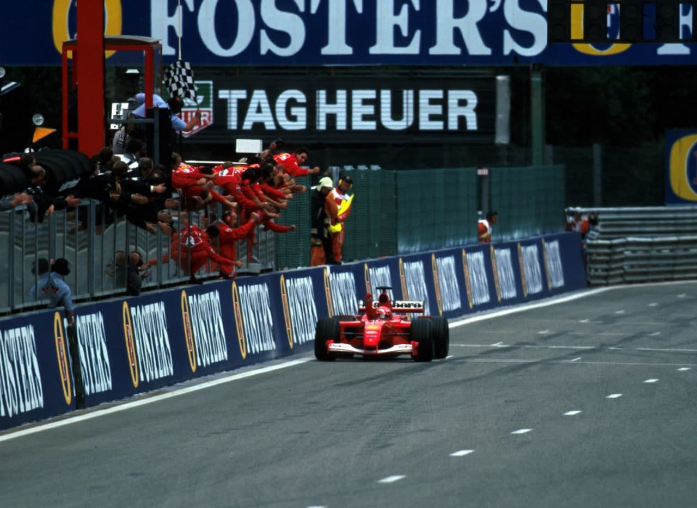

Spa-Francorchamps - 02/09/2001
SCHUMACHER 52

O tetracampeão mundial vence sua 52ª corrida na Formula 1 em prova marcada pelo grave acidente de Luciano Burti e pelo fraco resultado de Rubens Barrichello
POR AMERICO TEIXEIRA JR.
Não fosse o grave acidente sofrido pelo brasileiro Luciano Burti em Spa-Francorchamps, a 14ª etapa do Mundial de Pilotos e Construtores de Fórmula 1 teria sido o palco ideal para a conquista da 52ª vitória de Michael Schumacher na categoria, o que faz dele, isoladamente, o maior vencedor de todos os tempos. Na disputa pelo vice, David Coulthard (McLaren Mercedes) não apenas foi o mais eficiente dos três pretendentes, chegando em 2ª, como também foi favorecido pelos fracos resultados de Rubens Barrichello (Ferrari) e Ralf Schumacher (Williams BMW). Os acontecimentos que fizeram do Grande Prêmio da Bélgica o mais conturbado da temporada começaram antes mesmo da largada. Heinz-Harald Frentzen, que alinhava em um surpreendente 4a posto após aproveitar-se do término da chuva ao final da classificação de sábado, teve o motor Acer (Ferrari) de seu Prost apagado. O procedimento de largada foi abortado e, na nova volta de apresentação, quem ficou parado foi justamente o pole position Juan Pablo Montoya, que partiu depois de todos e teve de alinhar o Williams BMW na última posição do grid, ao lado de Frentzen. Ao apagar das cinco luzes vermelhas, Ralf Schumacher pulou na frente, fazendo valer sua condição de 2º no grid. Mas a liderança do comandado de Frank Williams durou menos de uma volta pois, no complemento da primeira, Schumacher já pulava para a ponta, seguido por Ralf, Barrichello (Ferrari), Giancarlo Fisichella (Benetton Renault), Mika Hakkinen (McLaren Mercedes) e Coulthard. Com o acidente de Burti na quarta volta (ver box), a prova foi interrompida, com cinco voltas válidas, e a relargada aconteceu cerca de 20 minutos depois. O grid foi formado com o posicionamento na quarta volta e a nova corrida teve 36 voltas. Nesse novo procedimento de largada, foi a vez de Ralf Schumacher ficar parado na pista. Na largada, Fisichella partiu de forma bastante ousada, assumindo a 2a colocação da prova, atrás apenas do tetracampeão da Ferrari. As chances de Montoya foram definitivamente por terra com o estouro do motor BMW na terceira volta.

A essa altura da prova, Rubens Barrichello tentava de todas as formas passar Fisichella, mas o italiano da Benetton fazia-se valer do novo pacote aerodinâmico e voava na pista, sem chances para o brasileiro. Mas os problemas para o piloto da Ferrari iniciaram, mesmo, no pit da nona volta. Ao entrar, era o 3º. Retornou em 5º, perdendo posições para os dois pilotos da McLaren. Sua corrida ficou mais prejudicada ainda quando precisou parar nos boxes na 17ª volta para trocar o bico do carro, danificado na disputa pela 4ª posição com Hakkinen — ficou sem o spoiler dianteiro na chicane imediatamente posterior à entrada dos boxes, a Bus Stop, e percorreu uma volta inteira antes do pit. Retornou à pista somente em 9º e terminou a corrida em 5º, depois de ultrapassar Jean Alesi (Jordan Honda) — que ao lado de Schumacher e Fisichella, foi o grande destaque da prova. Outra disputa que movimentou o final da corrida foi a travada entre Fisichella e Coulthard pela 2ª colocação. Várias foram as tentativas do escocês mas, na volta 27, o piloto da Benetton não conseguiu conter as investidas de Coulthard, que com o resultado firmou-se na vice-liderança com 57 pontos, nove de vantagem sobre Barrichello, o 3º na classificação, e 13 para Schumacher da Williams.

Na quarta volta, Luciano Burti fazia uma tentativa de ultrapassagem sobre Eddie Irvine (jaguar) e houve um choque entre os dois. Em consequência, Burti perdeu o spoiler dianteiro e saiu da pista. Em linha reta e desgovernado, bateu na barreira de proteção, O choque foi tão violento que deslocou a barreira de pneus, ficando o carro do brasileiro literalmente envolvido pelo dispositivo de proteção. O serviço de socorro e o próprio Irvine retiraram os pneus de sobre o carro e um guincho precisou rebocar o Prost para que o piloto recebesse os primeiros atendimentos. Esses foram demorados porque Burti estava desmaiado. No hospital, em Liège, constatou-se ferimentos no rosto e na cabeça, mas sem gravidade. Mesmo assim, os médicos preferiram manter o piloto internado e, até o fechamento desta edição, ele ainda não havia passado pelos novos exames, marcados para a segunda-feira (3 de setembro). Rubens Barrichello chegou a se deslocar para o hospital na tarde do domingo e conseguiu falar com Burti por alguns instantes. Viu o seu amigo com alguma dificuldade de expressão por causa dos medicamentos, mas completamente fora de qualquer perigo. Eddie Irvine, envolvido no acidente, disse que a proteção do pescoço impediu danos maiores ao piloto e, com a retirada do carro, constatou-se que a estrutura do Prost absorveu o impacto, sem danos para as pernas de Burti. Em decorrência da necessidade de mais exames, os médicos esperariam os resultados na segunda-feira para determinar tratamento ou mesmo a alta.